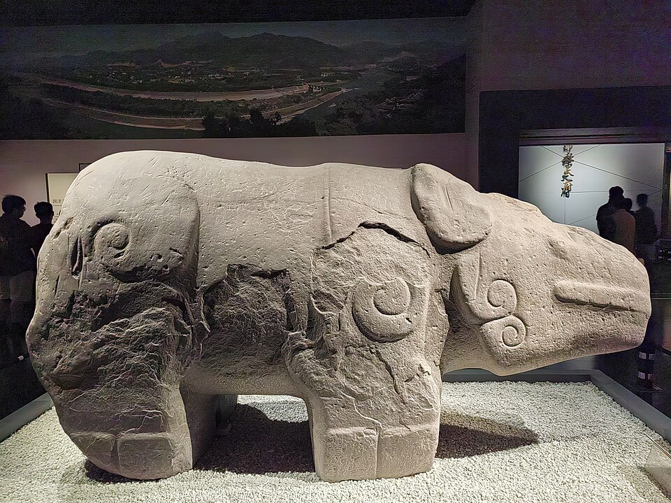

★ 兩篇以上攻略或官方都提到；單一來源 只有一篇。 大眾點評、小紅書、知乎擋爬蟲，人均多半未查到；有寫的是攜程或去哪兒的數字（2026/11 查）。點菜記得說「微辣」。
🏛️ 成都博物館
目標
① 2 樓 2 號展廳的鎮館之寶「一大一小」：石犀（長 3.31 m、重 8.5 噸）、經穴漆人（高 14 cm）★。官方導覽手冊寫兩件都在 2 樓這一廳，先看。② 3 樓古代篇（隋－清）。③ 5 樓皮影、木偶。從 1 樓的博物館出入口進出（導覽手冊上只標了這一個出入口）。
樓層順序（13:45～15:35，館內不做路線地圖）
官方樓層平面圖：官網 導覽手冊（2024-04）。轉載授權未查到，所以只放連結。
- 13:45 1F 出入口：安檢後直接上 2 樓
- 13:50～14:45 2F 2 號展廳 古代篇（先秦－南北朝）（樓層：官網）：石犀（研判在先秦或兩漢的段落：戰國晚期或略晚的作品，2013 年在天府廣場附近出土 單一來源）、經穴漆人（西漢，老官山漢墓出土，通體髹黑漆 單一來源）。同一廳還有寶墩遺址沙盤、裴君碑（「列備五都」）、蜀錦、畫像磚、陶俳優俑 單一來源

Yumeto・CC BY-SA 4.0・Wikimedia Commons（2025-05） - 14:45～15:05 3F 4 號展廳 古代篇（隋－清）：3 號臨展廳不排
- 15:05～15:15 4F 5／6 號展廳 近世篇、民俗篇：時間不夠就跳過
- 15:15～15:28 5F 7／8 號展廳 中國皮影博物館：皮影、木偶。皮影戲演出只有週五 19:00 單一來源，12/13 沒有
- 15:28～15:35 搭電梯回 1F → 出館：經過文創店（有蓋章本、石犀系列文創 單一來源）；出館後走到小名堂約 7 分（高德 433 m）
各層停留時間是估算（自己分配）；樓層配置依官網展覽頁與導覽手冊。不排：-1F 人與自然（動物標本，不在往上走的動線上）、1F 1 號特展廳、6F 茶舍。
時間
- 週日 09:00～17:00、16:30 停止入館（官網；開到 20:30 只有週五、六）。週一閉館
- 官網寫 14:00～16:00 是觀展高峰，這次剛好在這段時間進館
- 免費人工講解 10:30、14:30 各一場，約 1.5 小時，提前 10 分到 2 樓 2 號廳門口 單一來源。⚠️ 參加 14:30 那場會講到 16:00，接不上 15:45 的小名堂，所以不參加，改聽微信公眾號的免費語音講解 單一來源
實用
- 免費、要提前預約 ★；台胞證能不能預約：未查到
- 廁所：導覽手冊每一層都有標（官網）；寄物：在南樓寄存包裹（官網）
- 1 樓諮詢台有問詢、導覽、講解服務（官網）；語音導覽器 40 元／次、押金 200 元 單一來源
- 每層有免費章，蓋章本在 1 樓文創店買 單一來源
- 地鐵：天府廣場站西1(北)、西1(南)出口（這天從夫妻肺片走過來，不經過）
吃的、文創
- 館內：5F M-LOOP 咖啡區、6F M-LOOP 茶舍（官網導覽手冊 2024-04；現在還有沒有營業：未查到）
- 門口附近：酥小蒙牛肉饼店(天府广场店) ★：牛肉酥餅，西御街6号；人均 ¥9、07:30-20:30（攜程）單一來源；排隊幾分鐘到半小時 單一來源（人民網 2024-03）
來源：官網 參觀指南、官網 常設展覽、官網 導覽手冊、川觀新聞（光明日報 2026-03）、方志四川 2026-05、去哪兒 2025-06、攜程 酥小蒙。筆記：1211_成都市區景點攻略、1213_成都博物館_園內路線